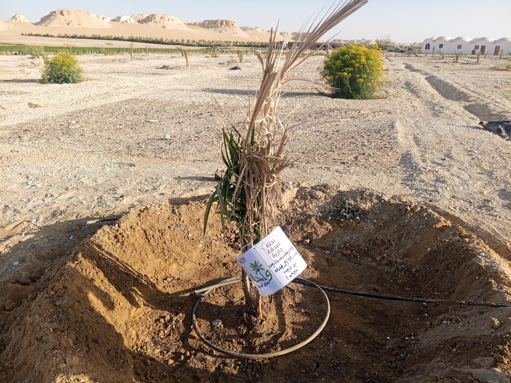

"كان رحمه الله رجلاً طيب القلب، محباً للخير، واصلاً للرحم، يسعى في قضاء حوائج الناس. ترك خلفه سيرة عطرة وأسرة محبة تدعو له. نسأل الله أن يجمعنا به في مستقر رحمته."
ألبوم صدقة النخلة
مُقدم بفضل الله من: الزوجة المخلصة، وجميع أبنائه وبناته

القرآن الكريم
اضغط على السورة لقراءتها
استمع للقرآن في الخلفية
دعاء صوتي للمتوفي
دعاء خاشع لروح الوالد رحمه الله
الختمة الجماعية
اكتملت: 0 مرة
اضغط على الجزء لحجزه وقراءته. التحديث يظهر للجميع لحظياً.
جاري تحميل الأجزاء...
ثواب ختمة في ثوانٍ
قال رسول الله ﷺ عن سورة الإخلاص: "والذي نفسي بيده إنها لتعدل ثلث القرآن". اقرأها 3 مرات واهدي ثوابها للوالد.